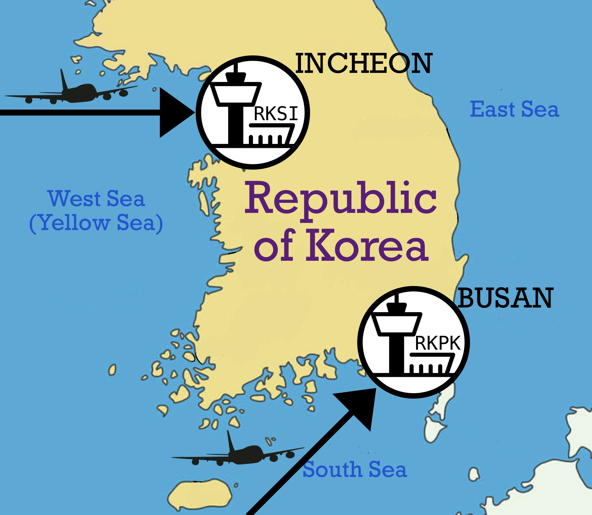

<!-- Main Container -->
<div class="container">   
  <div class="row">
    <div class="side-left col-sm-4 col-md-4">
      <h3 class="lead">Travel Info : </h3><hr>
      <p><a href="/transport">Transport Information</a></p>
      <p><a href="/visa">VISA request</a></p>
      <p><a href="/invitation">Invitation Letter</a></p>
      <p><a href="/travel">About Busan and Haeundae</a></p>
    </div>
    <div class="col-sm-8 col-md-8">
      <h3 class="lead"id="anchor1" style="font-size: 30pt"> Transport Information </h3><hr>

        <h4>Entering Korea</h4>
      
        <p>
          A main airport of Korea is Incheon International Airport(ICN, RKSI). 
          International flights from almost other contries to Korea usually arrive at Incheon airport. 
          You can be also admitted to Korea by using Incheon airport. 
        </p>
        <p>
          If you live in East Asia or South East Asia, then Gimhae International Airport(PUS, RKPK) can be available. 
          Gimhae airport is located in Busan and the nearest airport from Haeundae which is venue of SQM 2022. 
          Using Gimhae airport is more faster than Incheon airport to arrive at destination. 
          For reference DON'T take pictures or videos in the airport because Gimhae airport is military fortification.
        </p>

        <h4>Entering Busan</h4>
      
        <p>
          Arriving at Incheon airport, there are many ways you can choose. 
          <ul>
            <li>By airplane</li>
            <p>Move to Gimpo international airport by using airport railroad. Use a domestic flight to Gimhae. </p>
            <li>By train</li>
            <p>Move to Gwangmyeong station by using 6770 bus. Use railway to Busan station.</p>
            <li>By express bus</li>
            <p>Move to Seoul Express Bus Terminal by using airport railroad and subway line No.9. Use express bus to Busan West Bus Terminal</p>
          </ul>
        </p>

        <h4>Arrive at venue</h4>
        <ul>
          <li>From Gimhae international airport</li>
          <p>Take Busan-Gimhae Light Rail Transit to Sasang Station. And transfer at Sasang station for subway line No.2 to Jangsan. Then alight at Haeundae Station.</p>
          <li>From Busan station</li>
          <p>Take subway line No.1 to Nopo. And transfer at Seomyeon Station. Then alight at Haeundae Station.</p>
          <li>From Busan west bus terminal</li>
          <p>Take subway line No.2 to Jangsan. Then alight at Haeundae Station.</p>
        </ul>
  </div>  
  </div>    
</div>  

<!--End Main Container -->